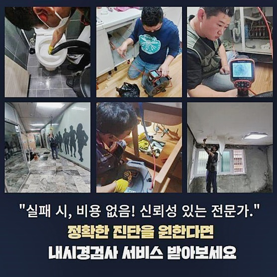
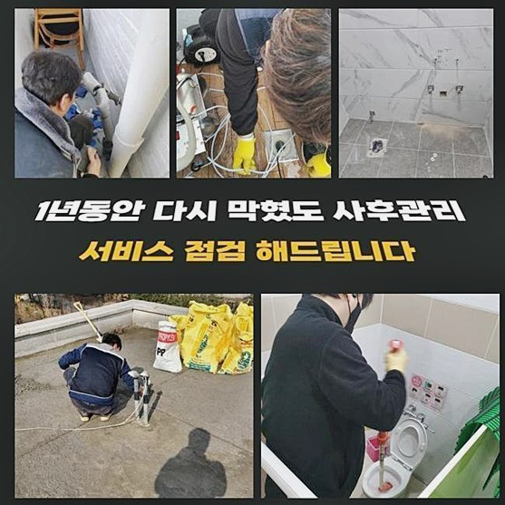
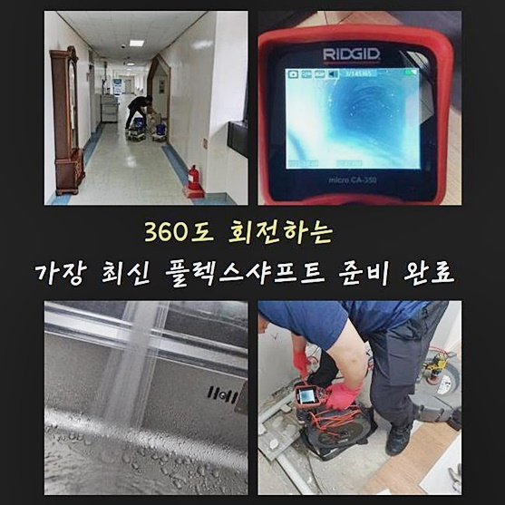
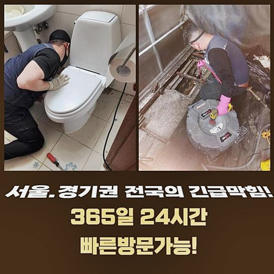
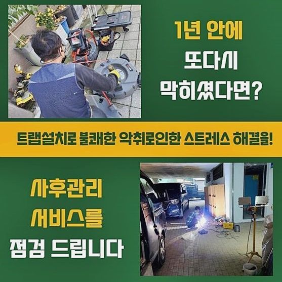
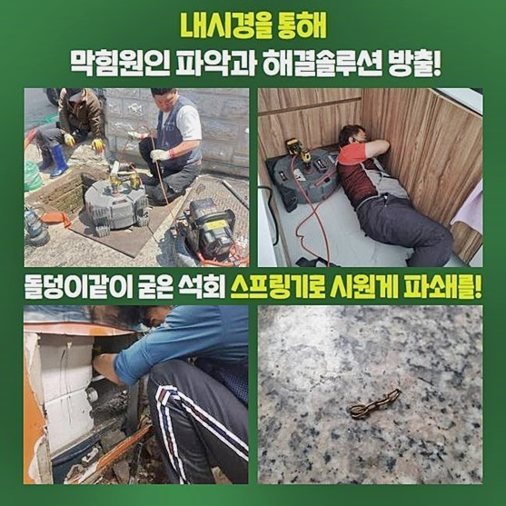

🏠 용산 도원동욕실뚫음 이태원동 횡주관청소 설비업체
용인 원동 하수구막힘 전문 시공 후기

📋 작업 개요
- 위치: 용인 원동, 원동, 용인
- 서비스 유형: 하수구막힘, 배관막힘, 뚫는업체, 배관청소
- 작업 일시: 2024. 8. 2. 23:48
- 업체명: 하수구수사대 (010-5615-2118)
🔍 문제 상황
용산 도원동욕실뚫음 이태원동 횡주관청소 설비업체
거주하는데에서 하수결함들이 발생되어도 당황을 금치않을 수 없지만 계속해서 수십수백이 다녀가는 상업목적의 건물에 있어서 배수장애들이 불거지게된다면 안정적인 수리가 이행되어야 할것입니다
방문드린 곳의 증세도 신속한 출장으로 풀어냈어요
상가라 함은 내부에 사무공간과 영업점 식당 등 다양하게 존재하므로 하수관 오류가 발생된다면 불편 뿐만 아니라 다양한 피해들로 발전됩니다
이같은 애로사항을 줄여드리기위해 빨리 문제의 곳으로 방문드렸는데요
도착하고보니 내부의 화장실안에서 물이 솟구치게되면서 배수관을 꼼꼼하게 들여다보았어요
라인들이 있는 장소에 구애받지않고 발생 가능성이 있는 막혀버리는 증상은 명확한 연유의 인지가 필요하겠는데요
배관의 초반부에 문제가 있는것이라면 간단한 방법을 통할 수 있지만 솟구치는 증세까지 야기된거면 진단을 기반으로 한 문제점 파악과정이 첫번째로 필요해요
이시점에서 주의할건 어려운 작업까지 이행하는 전문가에게 도움을 청하시는것이 좋아요
물이 솟구치는 증상까지 야기된 경우면 준비한 내시경도구를 가용시켜 컨디션을 체크한뒤 분명하게 까닭을 제거시키는 게 필요하죠
또한 방문드려 속행한 과정들은 석션으로 문제의 경중을 체크해봤죠
심각증세의 사태일땐 약품으로도 시정해내기가 어렵기때문에 집수시설로 흐르게하는게 요구되는 상황들도 있을때도 있어요

🔎 원인 분석
💡 전문가 진단: 정밀 진단 장비를 사용하여 슬러지의 고착 여부를 판명하고 타격/세척 작업을 실시했습니다.
이럴땐 각 라인으로 뻗어있는 연결위치에 축적되어 하수관의 교체를 진행해주기도 해요
그러나 관찰하니 하나의 하수관만 통수오류가 생긴게 아니였는데요
한가지의 증상으로만 치부하지 못하면 공동배수관이 비정상일 가능성들이 높을 수 있어요
다수의 인원들이 쓰는 건물이라 이런저런 가능성을 배제시키는것이 어려웠는데요
일정 스팟이 아니고 메인관의 결함이라면 곧바로 꼼꼼한 검수 단계가 실시되어야했는데요
석션장치로 잔해를 제거하여 배관끼리 연결된 부위의 문제 양상을 관찰하기 시작했습니다
안내한것처럼 연결지점에 잔해물이 자리잡아 문제가 생겼을수도 있어서입니다
그러나 여전히 문제들이 잔존해있기에 내시경장비를 삽입시켜 하수관을 체크했는데요
내시경장비는 오늘과같이 물흐름에 오류가 등장하게되었을때 없어선 안될 기계라고 할 수 있어요
잔해가 존재하는 하수관이면 거주지와 음식점 장소에 구애받지않고 검사가 가능해요
병원에서 쓰는 내시경기기를 떠올린다면 조금더 이해되실거라 생각합니다
헤드부에 부착된 렌즈부분으로 바깥에서 깊은부분까지 보면서 증상들이 발발한 까닭을 찾을 수 있습니다
하수시스템 오류가 생겨나 마땅한 준비책없이 무분별하게 도움을 요청하시면 무작정 수리를 실시하며 무슨 고민을 해결했는지 했는지도 모르고 금액지불까지 해버리는 현장도 있습니다

🔧 작업 과정
때문에 일러드리는 사항을 보시어 어떠한 국면에 알맞는 도구를 쓰는건지 인지하신다면 득이 되실거라 생각합니다
전문적인 도구를 활용하거나 무작정 굳이 안해도 되는 시공을 이행하는 곳들을 분별할 수 있답니다
내시경기기의 머리를 가로막는 잔해가 초입부터 많았던걸로 확인했으므로 샤프트기를 사용하여 문제되는 부분에 청소가 이행되어야 했답니다
배수관이 기능장애를 보이는 사례는 많은데 이와같이 전체관로가 고민을 보이면 셀프조치론 해결할 수 없어요
바라만보고 해결되기를 바라기에 앞서 빨리 문제가 생겼을때 고칠 목적으로 부유물을 사라지게하는 전문성을 갖춘 솔루션을 받아보시는것이 나중 상황까지 예방가능해요
샤프트장치는 상단에 돌아가는 사슬이 있습니다
사슬모양으로서 작동될 때 원운동을 하게되며 부유물을 제거시킨다거나 뒤엉키게하여 집수시설로 빼줍니다
하수구 뚫는 단계는 도로나 공장같은 장소에서 꾸준히 진행되고있는 작업이죠
이 과정은 하수도에서 야기된 폐기물과 쓰레기들을 제거시켜 배수기능들을 상승시키고 보건환경에도 이점이 많아요
이런 작업이라함은 전문업체가 진행하고 도시환경 측에 속한 시설물이나 중앙집수 설비가 자리잡은 하수구의 경우에는 철저한 점검을 거쳐 청소해주는 것이 중요합니다
안정적인 수리로 재발을 최소화하고 악취등의 증상들을 피할 수 있는데요
저희전문진은 작업을 할땐 내시경장치를 사용하여 문제의 시발점 지점들을 다시 관찰하여 청결하게 체크해주는 과정으로 신속그렇지만 명확히 수리해요
그렇기에 물빠짐 관련 증세가 나타났을때 어떠한 전문가를 결정하는게 베스트인지 심사숙고해보세요!
1. 1시간 안팎 도착 2번 자가적 관리법 안내 3번 적당한 장치의 사용
고객의 입장에서 이정도만 체크해도 시간들을 아끼며 의뢰인분께선 빠른 청소가 가능한데요
작업 중간중간 하수라인 결함을 관찰하여 잔재를 제거시켰어요
끝으로 해체한 부품들을 정리해줄 순서인데요
그리고 눈여겨 볼 것은 정리를 잘하느냐에 관한 사항입니다
하수도를 제대로 청고해주고 부품들을 잘 챙겨주어야 하므로 이런 과정도 오차없이 진행시켰어요
저희전문가의경우 결과물을 확인하시면 느끼시겠지만 전문적인 작업을 느끼시게되고 재발하지 않도록 작업해요


✅ 작업 완료
이같은 자신감으로 똑같이 증상들이 야기되어버려서 연락하시면 일년 간 as를 실시합니다
허나 의뢰인분의 과실사안이 없게 배수 관련 문제에 있어서 관리를 하시는것이 중요합니다
배수관으로 유입될 수 있는 잔해가라던가 기름은 배수 관련 문제에 있어서 피해서 가능하면 수도들만 흐를 수 있게 거름망부품을 유지하는것에 신경쓰시기를 바라요
저희전문가의 사후관리 제공은 철두철미합니다
오늘도 명확히 작업을 수행하고 깨끗히 끝마친 장소였습니다
작업에 있어서 고객님에게 이해하기 쉬운 안내로 진행되는 척도는 상담하니 조속한 배수를 바라고 계시다면 언제라도 전화주시면 됩니다



⚠️ 하수구 배관 막힘 예방 및 관리 가이드
- ✅ 머리카락, 비닐, 물티슈 등 물에 분해되지 않는 이물질은 하수구 유입을 절대 금지해 주세요.
- ✅ 하수구 거름망을 씌우고 모여진 이물질은 주기적으로 쓰레기통에 바로 비워주셔야 합니다.
- ✅ 배관 노후가 심할 경우 이물질이 더 쉽게 걸리므로 주기적인 배관 세척(고압세척 등)을 권장합니다.
- ✅ 작업 후 1년 이내 재발 시 하수구수사대에서 무상 A/S 보증 서비스를 제공합니다.
💡 핵심 정리
- 확실한 장비 작업(내시경 점검 및 샤프트 스케일링)으로 원인을 뿌리 뽑습니다.
- 작업 후 1년 이내에 동일한 부위 재발 시 100% 무상 A/S 서비스를 보장합니다.
- 서울 · 경기 · 인천 전 지역에 24시간 언제든 긴급 출동할 수 있도록 항시 대기 중입니다.
❓ 자주 묻는 질문 (FAQ)
🚨 용인 원동 하수구막힘 문제로 고민이신가요?
정확한 원인 진단과 확실한 시공으로 재발 없는 해결을 약속드립니다.
24시간 긴급 출동 | 서울 · 경기 · 인천 전지역 | 1년 내 재발 시 무상 A/S